A stoplight
A trigger
A partially-exhausted stoplight

A satisfied trigger
Pathological is a puzzle game consisting of marbles that roll along paths, and interact along the way with various devices and gadgets.
The object of each level is to "complete" all of the wheels on the board. To complete a wheel, catch four marbles of matching color in the same wheel. The marbles will vanish, and the wheel will turn dark to indicate that it has been completed. Note that this is only the usual way of completing a wheel. The exceptional cases are described in the section on Triggers and Stoplights.
To rotate a wheel, tap on the wheel. To eject a marble from a wheel, swipe your finger in the direction that you would like the marble to go.
The board timer is the maximum amount of time allowed to complete a level. It is depicted as a blue progress bar at the top of the screen. You must complete each level before the countdown reaches zero. If you complete the level within the available time, a bonus is awarded based on the percentage of time remaining.
The launch timer, depicted as a faint grey progress bar in the launch area, represents the maximum amount of time that a newly launched marble can remain in the launch area. Each time a marble is launched, the launch timer is reset to its full value. You must catch each new marble before the launch timer expires.
Each level has a maximum number of marbles that are allowed to be in motion at a time. As long as the maximum number of marbles are in motion, you can not eject any more marbles from wheels.
The maximum number of active marbles is shown as grey dots at the bottom of the launch area.
Buffers catch and hold a single marble at a time. The marble is held until another marble knocks it out, and takes its place. Note that once a marble falls into a buffer, there is no way of emptying the buffer again.
|
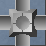 An empty buffer |
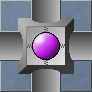 A buffer holding a purple marble |
Directors force all marbles to exit in the indicated direction. They are often used as one-way gates, allowing marbles to pass through in one direction but not the other.
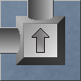Filters only allow the indicated color of marble to pass through. Any other color of marble will simply bounce back in the direction that it came from.
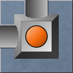Painters change the color of passing marbles to the indicated color.
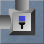Replicators create copies of marbles. Whenever a marble enters a replicator, at least two marbles are emitted. Some replicators produce more copies than others.
The number of copies produced by a replicator may be limited by the active marbles limit.
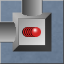Shredders simply destroy any marbles that enter into them.
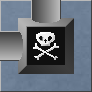Switches, like directors, force marbles to exit in the indicated direction. But unlike directors, switches switch between two different directions. Each passing marble causes them to switch.

Teleporters transport passing marbles to their twin teleporter at some other location on the board. Note that a board can have several pairs of teleporters, and their pairings might not be obvious. It can be helpful to realize that teleporters can only change the location of a marble - not the direction.
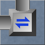Triggers and stoplights place temporary restrictions on wheel completion.
If a board contains a stoplight, then the first three wheels to be completed must be completed, respectively, using the three colors of the stoplight in order from top to bottom. For example, if the stoplight has the colors red, yellow and green (as in the diagram), then you must first complete a wheel using four red marbles. Then the second wheel must be completed using four yellow marbles, and the third must be completed using four green marbles. After the stoplight has been fully exhausted, then the rest of the wheels on the board can be completed using any colors as per usual.
If a board contains a trigger, then the first wheel to be completed must be completed by exactly matching the marble configuration presented by the trigger. Trigger configurations are chosen randomly. After the trigger has been satisfied, the rest of the wheels on the board can be completed in the normal way. But beware! A trigger will only stay satisfied for a short time.
A board can only have at most one stoplight or trigger, but it can have one of each. If a board has both a stoplight and a trigger, you must satisfy the trigger before working toward exhausting the stoplight.
|
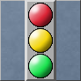 A stoplight |
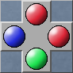 A trigger |
|
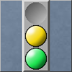 A partially-exhausted stoplight |
A satisfied trigger |
| Action | Points Awarded |
|---|---|
| Completing a wheel | 50 |
| Satisfying a trigger | 50 |
| Exhausting one light on a stoplight | 20 |
| Completing an already-completed wheel | 10 |
| Time bonus per % time remaining | 5 |
| Bonus per % holes empty | 2 |